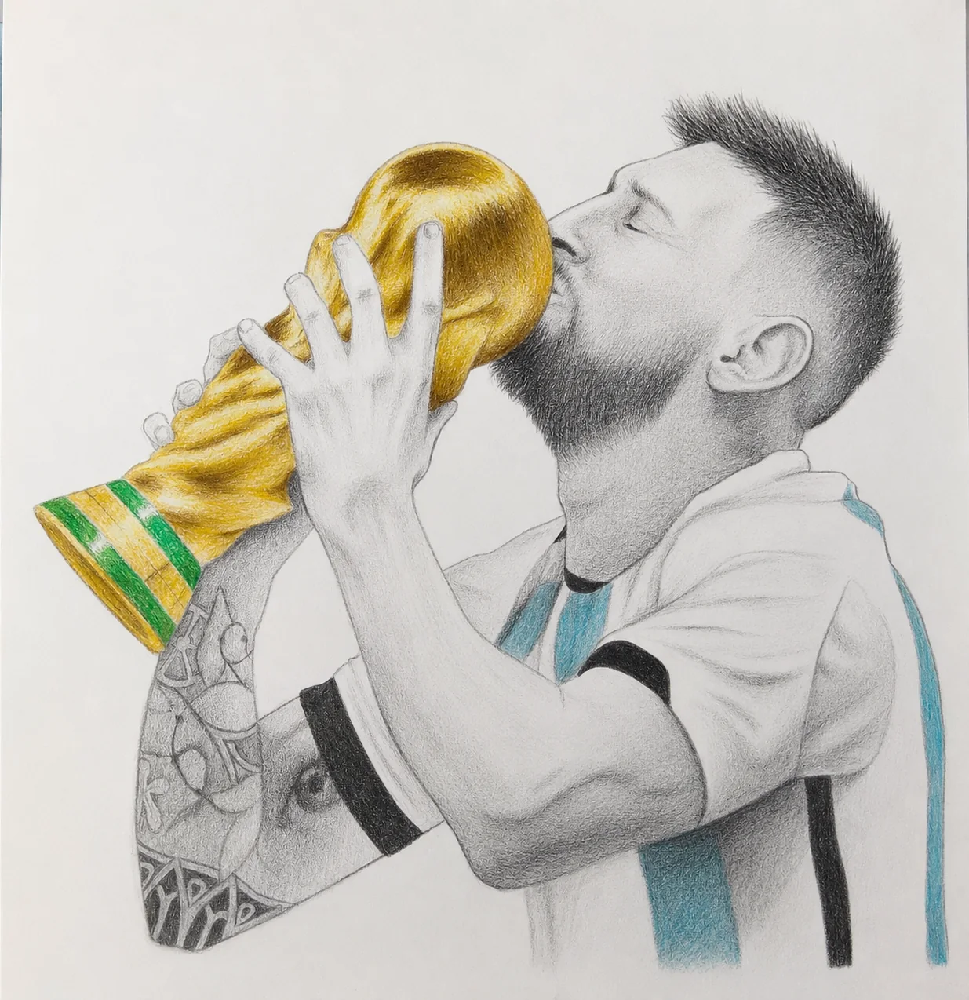
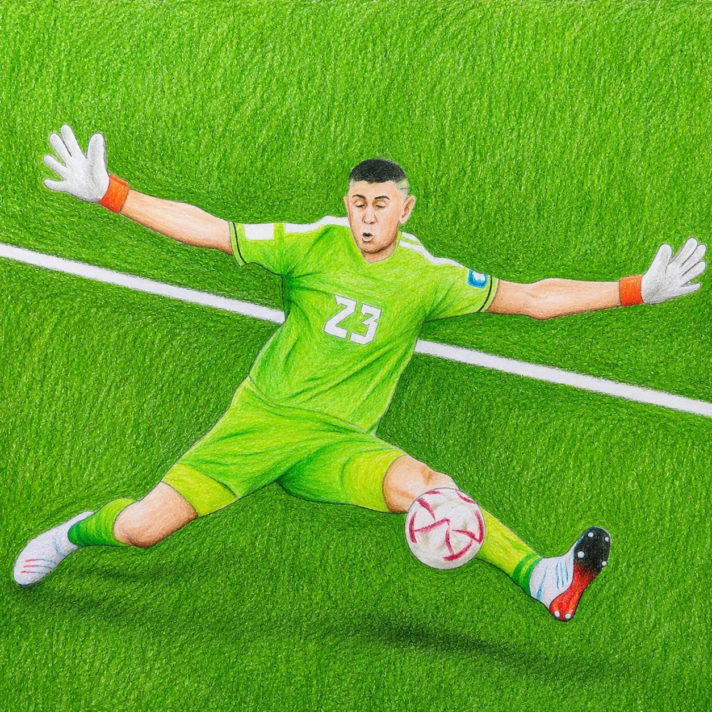

¿Por qué música biográfica?
Porque las canciones relatan los sucesos y acontecimientos en forma cronológica. Escuchás los resúmenes de los partidos transformados en temas musicales.
Álbum conceptual · Qatar 2022 · Tercera estrella
Música biográfica de relato histórico y cronológico
Un homenaje audiovisual moderno al camino de la Selección Argentina hacia la inmortalidad. Diez canciones, diez capítulos, una misma emoción celeste y blanca.
Escuchar álbum“GLORIA ETERNA” es un disco homenaje a la Selección Argentina campeona del mundo en Qatar 2022. El álbum propone un formato narrativo único: cada canción representa cronologicamente uno de los partidos disputados por la albiceleste durante el Mundial.
El proyecto combina distintos géneros musicales populares argentinos y latinoamericanos para relatar emocionalmente el recorrido completo hacia la tercera estrella.

Narrativa conceptual
“Gloria Eterna” es un álbum conceptual y narrativo que reconstruye, canción por canción, el recorrido de la Selección Argentina en el Mundial de Qatar 2022. Más que un simple homenaje deportivo, el disco funciona como una crónica emocional de uno de los momentos más importantes en la historia reciente del fútbol argentino.
El álbum comienza con la caída inesperada frente a Arabia Saudita, utilizando ese golpe inicial como símbolo de resiliencia y aprendizaje. A partir de ahí, las canciones muestran una progresión constante: la recuperación anímica contra México, la consolidación frente a Polonia y el inicio de la etapa eliminatoria con Australia.
Uno de los grandes pilares tematicos del disco es la resiliencia. La gloria no llega sin sufrimiento. Los partidos más dramáticos, como Países Bajos o la final frente a Francia, son retratados casi como batallas épicas donde el equipo atraviesa pruebas extremas para alcanzar la inmortalidad deportiva.
Dibu Martínez aparece simbólicamente como carácter, valentía y salvación. Lionel Messi se eleva como liderazgo, redención y destino histórico. El pueblo argentino late en cada tema: unión, esperanza, presión, orgullo nacional, resiliencia y desahogo colectivo.
Porque las canciones relatan los sucesos y acontecimientos en forma cronológica. Escuchás los resúmenes de los partidos transformados en temas musicales.
Porque somos argentinos que alentamos incondicionalmente por nuestra selección, en las buenas y en las otras también. Porque estamos agradecidos por tantas alegrías y nos sentimos honrados de ser contemporáneos de estos jugadores.
Estas canciones fueron creadas como una forma de devolver, aunque sea un poco, todas las emociones que nos hicieron vivir. Cada tema fue compuesto utilizando estilos musicales cercanos a los que escuchan los propios jugadores.
El disco fue realizado de manera autogestionada, con recursos modestos, pero con todo nuestro conocimiento académico, artístico y humano.
Galería cinematográfica


Lista de canciones
Creditos
Juan Enriquez · Compositor argentino, profesor de música, graduado de la Escuela de Arte Leopoldo Marechal. Composición, guitarra y voz.
Nico Segovia · Charanguista argentino, formado en la Escuela de Música Juan Pedro Esnaola. Charango, ronroco y coros.
Fabricio Enriquez · Estudiante de programación y nueva vocación musical. Coros y preparación vocal para futuras grabaciones.
Mauro Diaz · Teclados
Nelson “Neco” Contreras · Bajo en temas 6, 8 y 9
Walter Zelaya · Técnico de grabación, guitarra en tema 8 y bajo en temas 1, 2, 3, 4, 5, 7 y 10
Matias Homero Garcia · Ilustraciones
Milena Enriquez · Edición multimedia
Grabado en K.B. Sound Record
Masterizado en Magic Blue
Contacto
Para escuchar, compartir o conversar sobre “GLORIA ETERNA”.